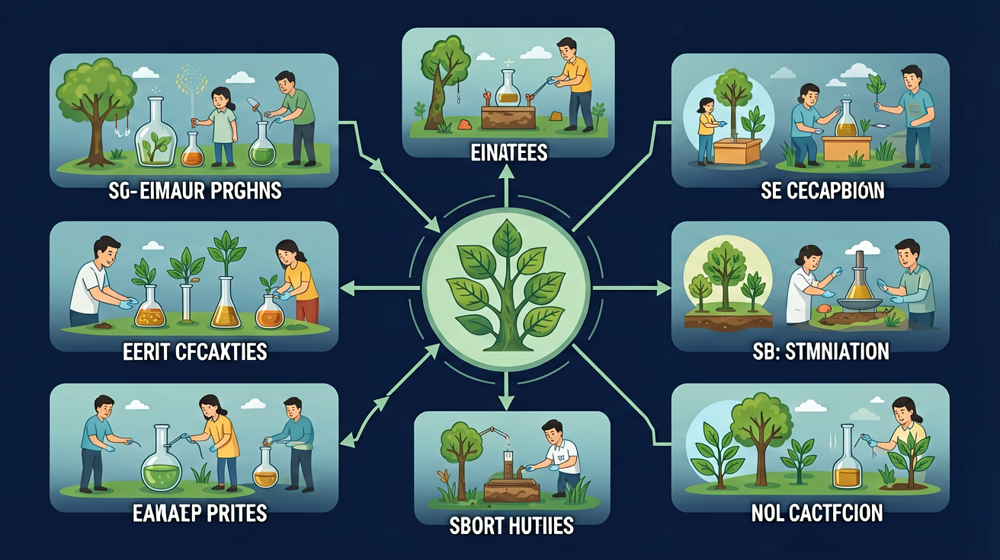

小学科学 G2 · 物质科学
力是物理世界最基本的概念之一。今天我们认识两种最常见的力——推力和拉力，了解它们的方向、效果和大小关系。

❓ 为什么推门比拉门更费力？
❓ 拔河比赛时怎么站才不容易滑倒？
❓ 磁铁吸铁钉算拉力还是推力？
学完这一课，这些问题你都能自信地回答。
以下哪个是拉力实例？
关于力的方向，正确的是？
ABT NARRATIVE · 情境引入
小明每天上学，都要推开校门进去，放学又要拉开柜子取书包。 他觉得这只是普通的生活动作——And（并且），他每天都这样做，习以为常。
But（但是），有一天科学老师问： "推门和拉柜子，用的力有什么不同？为什么有时候推一下就够，有时候要使劲推？" 小明愣住了——他从没想过这个问题！
Therefore（因此），今天我们就来探索这两种最基本的力： 推力和拉力。搞清楚它们的方向、效果和大小， 你也能像科学家一样理解生活中的每一个动作！
CORE CONCEPTS
两种力方向相反，但都能让物体运动起来。
用力把物体推离自己，物体向推的方向运动。
用力把物体拉向自己，物体向拉的方向运动。
ANIMATION VIDEO
观察箭头动画——推力让物体远离，拉力让物体靠近。力越大，运动越快！
▶ 点击播放 · 共 22 秒 · 5 个场景
INTERACTIVE SIMULATION
点击"施加推力"或"施加拉力"按钮，调节力的大小，观察小车的移动方向和距离！
EFFECTS OF FORCE
力不只会移动物体，还能改变它的形状！
FORCE MAGNITUDE
同一方向的力，大一点效果就明显一点。
QUIZ
每题只有一个正确答案，选错了会有错因分析哦！
ACHIEVEMENT BADGES
完成各模块，解锁专属徽章！